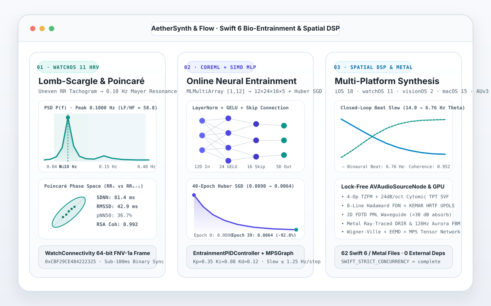

AetherSynth & Flow
Multi-platform Apple ecosystem spatial audio synthesizer (iOS 18, watchOS 11, visionOS 2, macOS 15, AUv3) with HealthKit RR-interval Lomb-Scargle HRV spectral analysis, WatchConnectivity FNV-1a telemetry, and CoreML SIMD closed-loop brainwave entrainment in Swift 6 and Metal.
- Period
- November 2026
- Release
- Public source project
- Work type
- Independent open-source project
- Development
- AI-assisted, with verification
What I built
An offline-first Swift 6 and Metal codebase spanning six XcodeGen targets (AetherSynthFlow iOS 18, AetherSynthWidgets ActivityKit/WidgetKit, AetherSynthWatch watchOS 11, AetherSynthVision visionOS 2, AetherSynthMac macOS 15, and AetherSynthAUv3 Audio Unit extension) with zero external package dependencies and strict concurrency (SWIFT_STRICT_CONCURRENCY = complete).
The audio engine runs a wait-free AVAudioSourceNode procedural synthesizer combining stereo binaural beats, 4-operator through-zero FM, Paul Kellet 7-pole pink noise, 24 dB/oct Cytomic TPT SVF filtering, an 8-line Hadamard feedback delay network, KEMAR HRTF UPOLS convolution, a 2D FDTD PML acoustic waveguide, and Metal ray-traced directional room impulse responses. On watchOS 11, WatchHealthKitBiometricEngine streams beat-to-beat RR intervals into an uneven-grid Lomb-Scargle periodogram evaluator (0.04–0.15 Hz baroreflex LF and 0.15–0.40 Hz vagal HF bands) across a 64-bit FNV-1a WatchConnectivity binary bridge. An on-device CoreML [1, 12] tensor pipeline and 3-layer SIMD MLP (12 → 24 → 16 → 5 with LayerNorm, GELU, skip connections, and online Huber SGD) pairs with an anti-windup PID controller to continuously adapt binaural beat and filter parameters.
What was checked
Verified across 62 Swift 6 and Metal source files with deterministic mathematical benchmarks: on a 110-beat synthetic 0.10 Hz Mayer-wave RR series, the Lomb-Scargle analyzer recovered the exact 0.1000 Hz resonance peak (SDNN = 81.40 ms, RMSSD = 42.89 ms, pNN50 = 36.70%, LF/HF = 58.80, RSA coherence = 0.9916). Across 40 epochs of online Huber-loss backpropagation, the 12-to-5 SIMD MLP reduced prediction loss monotonically from 0.089010 to 0.006432 (92.8% reduction). In a 45-step closed-loop PID simulation coupled to the synthetic cardiovascular oscillator, the controller slewed binaural frequency from 14.0 Hz down to 6.76 Hz while raising vagal coherence to 0.9523.


vanovri/aether-synth-flow.Verification date: 8 November 2026. Static concurrency/type audits and numerical reference tests verify the included DSP, Lomb-Scargle, and MLP algorithms on synthetic fixtures.
What this demonstrates
Demonstrates multi-target Swift 6 concurrency, lock-free real-time audio synthesis, uneven-grid Lomb-Scargle spectral estimation, and online neural weight adaptation on synthetic cardiorespiratory benchmarks. Passing deterministic simulation tests does not establish clinical medical-device accuracy or physical Apple Watch hardware validation.
All projects